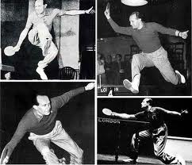

-
Jan-Ove Waldner

Nacido en Suecia en 1965. Se le considera el mejor jugador de la historia, no solo por sus éxitos deportivos, sino también por la longevidad de su carrera. Su primer resultado internacional destacable llegó a la edad de 17, alcanzando la final de los campeonatos de Europa, donde perdió contra su compatriota Mikael Appelgreen. A la edad de 39 alcanzó las semifinales de los juegos olímpicos de Atenas. Wang Tao, campeón olímpico de dobles dijo de el: Se ha enfrentado el solo a 6 generaciones de jugadores chinos, donde quiera que vaya, es una leyenda del tenis de mesa. Incluso en China, cuna de sus rivales, es toda una leyenda y un ejemplo a seguir. Su apodo allí es Lao Wa.
2 veces campeón del mundo (1989 y 1997). En este último título ganó el campeonato individual sin perder un solo set, una hazaña difícilmente repetible. Campeón Olímpico en 1992 en Barcelona, y campeón de Europa en 1996, siendo el único jugador de la historia en conseguir los 3 títulos.
Su apodo, Mozart es debido al arte de su juego. Uno de los mejores saques del circuito, su variedad en la devolución de saques, sus cambios de ritmo, así como su increible golpeo tanto en corta como media y larga distancia hacían de su juego un verdadero espectáculo. Tanto su derecha como su revés eran un arma a temer.
-
Jorgen Persson
Nacido en Suecia en 1966. Uno de los mejores jugadores europeos de la historia. Formó parte de la mejor generación de jugadores suecos, que protagonizaron entre 1983 y el año 2000 un duelo continuo con el equipo nacional chino en los campeonatos del mundo. 5 victorias para China y 4 para Suecia fue el resultado de estas 2 décadas, 7 finales directas entre ambos equipos.
Caracterizado por sus cambios de ritmo y su golpeo plano de revés que sorprendía a sus rivales, su explosivo juego le llevó a ser número 1 del mundo. Campeón del mundo individual en 1993, venciendo a su compatriota Waldner, contra el que sucumbió en la anterior edición en 1991.
Ha defendido los colores del equipo Sueco en todas las olimpiadas desde que se introdujo el tenis de mesa como deporte olímpico. Su último resultado fue sin duda espectacular, perdiendo la medalla de bronce contra Wang Liquin nada menos que a la edad de 42 años. Su extremadamente longeva carrera llena de éxitos le convierte en un ejemplo a seguir por cualquier deportista.
-
Makael Appelgreen
Nacido en Suecia en 1961. Uno de los jugadores más carismáticos y espectaculares de la historia. Jugador zurdo, que se caracterizaba por su juego desde la media distancia. Aparentemente daría la impresión de que un jugador que se alejaba continuamente de la mesa dejaba dominar el juego, pero ocurría lo contrario. Según los expertos, hasta la fecha era el jugador europeo más rápido de movimientos de la historia y el jugador que más rotación imprimía a la pelota, siendo complicadísimo devolverle ya el segundo o tercer topspin. Fue miembro de la mejor generación de jugadores suecos de la historia, contribuyendo a sus grandes éxitos. 3 veces campeón de Europa Individual, una de ellas contra su compatriota Waldner, las otras dos contra Mazunov y Grubba. Fue el pilar básico en los campeonatos mundiales ganados por Suecia por equipos en las décadas de los 80 y 90.
-
Victor Barna
Nacido en Budapest en 1911, es la figura del tenis de mesa más legendaria. Ganó 22 títulos mundiales, incluyendo 5 individuales. Famoso por su flick de revés. Barna fue la primera estrella de este deporte. Su momento más importante llegó en 1935, en los mundiales celebrados en Wembley, donde ganó los 4 títulos mundiales (Individual, dobles, dobles mixtos y equipos). Un acceidente de automóvil apenas un més después cortó su carrera, consiguiendo desde esa fecha 2 títulos mundiales comparados con los 20 que había obtenido anteriormente. A pesar de ello, ostenta el record de títulos mundiales, cifra que hoy en día es casi inconcebible que se vuelva a alcanzar.
-
Richard Bergmann
Jugador nácido en Austria en 1920. Representó a los paises de austria e Inglaterra. Conocido como el mejor jugador defensivo de la historia del tenis de mesa. En 1937, se convirtió en el jugador más joven de la historia en convertirse en campeón del mundo. A mediados de los años 50, se convirtió en el primer jugador profesional de la historia, pasando a hacer giras con los Harlem globetrotters. En su época, el jugador más tenaz. Su juego se caracterizaba por una increible capacidad de devolución desde la media distancia, así como una defensa dominante con el reves desde encima de la mesa. Debido a sus orígenes en el boxeo, era con diferencia el jugador con mejor juego de piés conocido hasta la fecha. Su apodo era Ricardo Corazón de León, por su capacidad de recuperación.
-
Johnny Leach

Jugador Inglés nacido en 1922. Sigue siendo el último jugador inglés en conseguir el título de campeón del mundo. Desarrollaba un juego allround con un magnífico control de la bola. Su defensa era excelente, pero no se limitaba a ello, podía atacar con ambos lados de la raqueta. Su excelente condición física con una gran agilidad de movimientos, y su naturaleza competitiva le hicieron conseguir sus 2 títulos mundiales Indivuales en 1949 y 1951.
-
Hirogi Satoh
Fue el primer jugador de presa lapicero en ganar un campeonato del mundo Individual. Además, fue el primer jugador en utilizar esponja.
-
Ichiro Ogimura
Jugador nacido en Japón en 1932. Llamado el japonés volador. Reflejos espectaculares y gran agilidad. Excelente control de bola. Sus capacidades técnicas, estado de forma, determinación y convicción le hicieron conseguir 12 títulos mundiales. Su gran rival a lo largo de su carrera fue el también japonés Tanaka, ganador de 5 títulos mundiales (2 de ellos Individuales). Una de sus grandes aportaciones al mundo del tenis de mesa fue su contribución a la revolución técnica del tenis de mesa Sueco. Tal fue su aportación general a nuestro deporte, que incluso llegó a ser presidente de la ITTF.
-
Angelica Rozeanu
Nacida en Rumanía en 1921. Una superestrella del tenis de mesa femenino. Se ganó la reputación de ser la mejor jugadora de tenis de mesa de la historia. Nadie, ni siquiera la gran Deng Yaping ha conseguido tantas medallas en campeonatos del mundo. Campeona de Rumanía a los 15 años, no pudo practicar el deporte durante la segunda guerra mundial, desde su edad de 18 hasta los 23, ni siquiera entrenar. Fue la última jugadora no asiática en ganar el título mundial. Su habilidad se basaba no tanto en la potencia de sus golpes, sino en el juego de piés, control de bola, habilidad natural y técnica.
-
Andrej Grubba
Nacido en Polonia en 1958. Uno de los jugadores más carismáticos y con mayor personalidad de la historia del tenis de mesa, siendo un ejemplo para varias generaciones de jugadores. Desarrollaba un juego allround de control y colocación de bola, basado en el topspin. Característico era también el arco que dibujaba con el topspin de revés, alargando el gesto al máximo. Espectacular tanto en su juego como en su emotividad durante el juego. Una de las facetas por las que se le conocía más era por su capacidad de cambiar la raqueta de mano en cualquier momento del punto. Murió prematuramente en el 2005 y supuso una gran pérdida para el mundo del tenis de mesa. A lo largo de su carrera alcanzó 3 medallas en campeonatos del mundo, así como 5 medallas en Europeos.
-
Chuang-Tse Tung
El magnifico jugador chino, nacido en 1942. Increible velocidad y potencia de golpeo. Posiblemente el jugador más atacante de la historia. Ganó 3 campeonatos del mundo consecutivos, los 3 contra su compatriota Li Fu Yung, suponiendo esto un hito ya que fue el primer jugador en mantener su hegemonía durante 5 años (Los campeonatos del mundo se celebraban cada dos años a partir de 1957)
-
Wang Nan
La jugadora china con mejor palmarés de la Historia. Nacida en 1978. Jugadora zurda que se caracterizaba por el cambio de juego durante el intercambio de golpes, así como su gran potencia. Se unió al equipo nacional chino en 1995, pero no fue hasta 1997 cuando consiguió su primer gran éxito individual, ganando la copa del mundo, así como en 1998. Explotó en 1999 ganando el campeonato del mundo individual y las finales pro-tour ITTF. Llegó al nº 1 del mundo ese mismo año. En el año 2000 se convirtió en campeona olímpica en individuales y dobles, por lo que se convirtió en una ganadora del Gran Slam. Tiene el record de haber conseguido consecutivamente 3 campeonatos del mundo en la categoría de Individual y dobles.
-
Deng Yaping
La jugadora china más legendaria de la historia. Nacida en 1973. Debido a su pequeña estatura jugaba muy cerca de la mesa, con gran velocidad tanto de revés como de derecha, y una apertura de ángulos con la que dominaba totalmente a las contrarias. A la edad de 13 años ganó su primer campeonato nacional, pero no se la incluyó en el equipo nacional por su baja estatura. A pesar de ello, sus grandes cualidades la llevaron al equipo nacional en 1988. Tuvo que retirarse prematuramente del tenis de mesa a la edad de 24, debido a problemas de condición física. Precisamente este retiro abrió las puertas a la leyenda de Wang Nan, pués según los expertos, ni siquiera la mejor Wang Nan habría podido con Deng Yaping. 2 años sin perder un solo partido son uno de sus logros.
Tal fue su categoría que al retirarse a los 24 años, ya había ganado más títulos que ningotra jugadora de tenis de mesa, incluyendo 4 Oros olímpicos y 14 títulos mundiales. Desde 1990, a la edad de 17 años, hasta 1997 con su retiro, mantuvo el número 1 del ranking mundial. Fue la primera jugadora de la historia en ganar Olimpiada, Campeonato del mundo y Copa del Mundo. Se la declaró como la mejor atleta china del siglo.